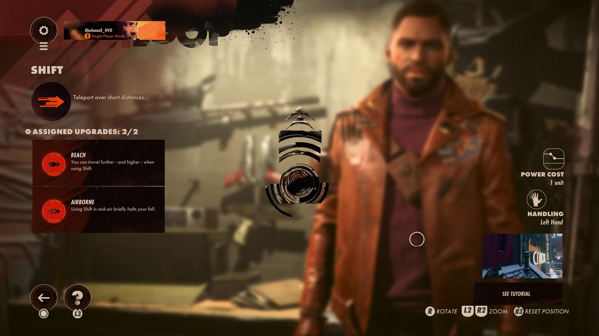

"Trinkets"
"Character Trinkets"
Spring Heel
The Shift slab allows the player to teleport to a close location. This is very similar to an ability in one of Arkane Studios other games Dishonored blink. There is also an upgrade called Reach which increases the distance of the teleportation, which I personally feel is necessary as the base distance isn't useful for much but perhaps giving yourself an extra jump distance. Speaking of jumps another upgrade that is useful when trying to get the most distance out of the Shift slab is the airborne upgrade, it will allow you to stay suspended in air for a brief moment of time while you decide where to teleport to, this is useful for using your double jump from Spring Heel to get some base distance and adding onto it with Shift.
Never Say Die
The Aether slab allows the player to temporarily go invisible, however this comes at a high power cost the Aether and Nexus slabs are the most power hungry slabs in the game - and for good reason. Using the Aether slab you can avoid a ton of confrontation with enemies as well as assist you in quick getaways. Now while this might make it sound like the Aether slab is overpowered it's not. Normally the Aether slab constantly drains power while active and deactivates if the player takes damage or attacks. However, if equipped the ghost upgrade prevents power draining while the player is not moving, the flicker upgrade prevents the power from deactivating when attacking but instead the player is briefly visible hence the name “flicker”, and finally the phase upgrade prevents the power from deactivating when taking damage and even reduces the amount of damage taken. But this is still all at the cost of losing a lot of power really quickly.
Juiced Up
The Karnesis slab allows the players, as one of the Visionaries Aleksis Dorsey - a cannibal - says
play with his meat
literally since using this ability allows the player to telepathically
throw enemies in any direction. This on its own is very fun to use but not very useful when it comes
to multiple enemies rushing you at once. But that is where the zone upgrade comes in, using this upgrade
allows the player to throw multiple enemies in an area at once rather than one at a time. If you combine
this with the flesh bomb upgrade, which causes enemies to explode upon reaching the ground you can have a
devastating AOE attack for those times when you need a breather.
Renewable
The Nexus slab allows the player to “Link” enemies so that whatever happens to one happens to all linked enemies i.e. if you kick one off a cliff they all go flying in the same direction. As Mentioned earlier this along with the Aether slab are the most power hungry ones in the game. The ability takes one full bar of power when shooting one link bomb - for lack of better description, and constantly drains power when enemies are linked. But there are some upgrades to help ease this ability's hunger - the Protraction upgrade, which reduces the amount of power that the ability uses. I personally also choose to run the Parasite upgrade, which heals the player whenever a linked enemy is damaged. This ability abuses your power bar, but I personally think that it is very much worth it especially if running a power based loadout with character trinkets like Renewable and Juiced Up which increase the speed that power regenerates and increases your maximum power respectively.
"Weapon Trinkets"
Lightning Strike
The Shift slab allows the player to teleport to a close location. This is very similar to an ability in one of Arkane Studios other games Dishonored blink. There is also an upgrade called Reach which increases the distance of the teleportation, which I personally feel is necessary as the base distance isn't useful for much but perhaps giving yourself an extra jump distance. Speaking of jumps another upgrade that is useful when trying to get the most distance out of the Shift slab is the airborne upgrade, it will allow you to stay suspended in air for a brief moment of time while you decide where to teleport to, this is useful for using your double jump from Spring Heel to get some base distance and adding onto it with Shift.
Hailfire
The Aether slab allows the player to temporarily go invisible, however this comes at a high power cost the Aether and Nexus slabs are the most power hungry slabs in the game - and for good reason. Using the Aether slab you can avoid a ton of confrontation with enemies as well as assist you in quick getaways. Now while this might make it sound like the Aether slab is overpowered it's not. Normally the Aether slab constantly drains power while active and deactivates if the player takes damage or attacks. However, if equipped the ghost upgrade prevents power draining while the player is not moving, the flicker upgrade prevents the power from deactivating when attacking but instead the player is briefly visible hence the name “flicker”, and finally the phase upgrade prevents the power from deactivating when taking damage and even reduces the amount of damage taken. But this is still all at the cost of losing a lot of power really quickly.
Big Box
The Karnesis slab allows the players, as one of the Visionaries Aleksis Dorsey - a cannibal - says
play with his meat
literally since using this ability allows the player to telepathically
throw enemies in any direction. This on its own is very fun to use but not very useful when it comes
to multiple enemies rushing you at once. But that is where the zone upgrade comes in, using this upgrade
allows the player to throw multiple enemies in an area at once rather than one at a time. If you combine
this with the flesh bomb upgrade, which causes enemies to explode upon reaching the ground you can have a
devastating AOE attack for those times when you need a breather.
Perforator
The Nexus slab allows the player to “Link” enemies so that whatever happens to one happens to all linked enemies i.e. if you kick one off a cliff they all go flying in the same direction. As Mentioned earlier this along with the Aether slab are the most power hungry ones in the game. The ability takes one full bar of power when shooting one link bomb - for lack of better description, and constantly drains power when enemies are linked. But there are some upgrades to help ease this ability's hunger - the Protraction upgrade, which reduces the amount of power that the ability uses. I personally also choose to run the Parasite upgrade, which heals the player whenever a linked enemy is damaged. This ability abuses your power bar, but I personally think that it is very much worth it especially if running a power based loadout with character trinkets like Renewable and Juiced Up which increase the speed that power regenerates and increases your maximum power respectively.